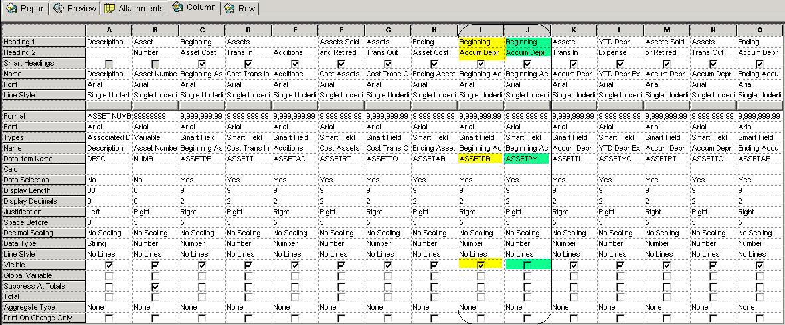
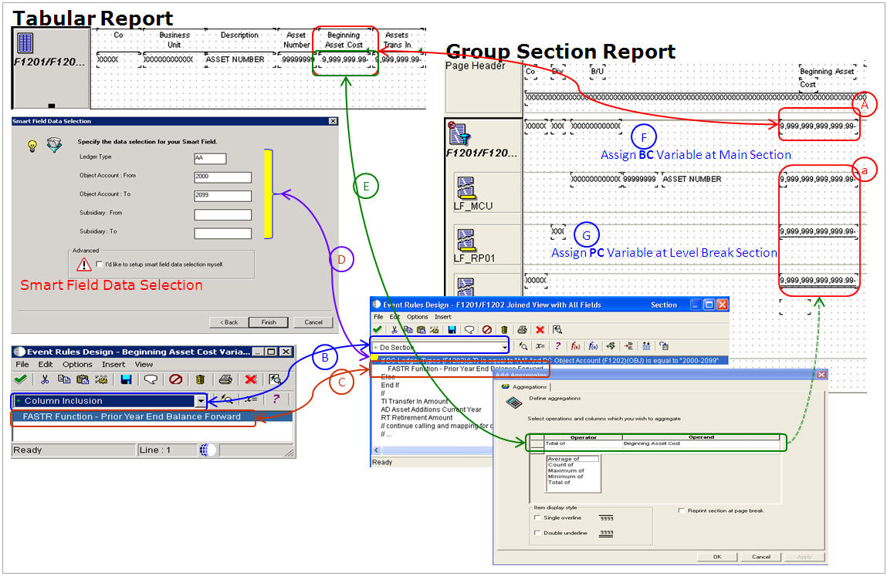

Purpose of this document is guide how to overcome hidden column in Tabular Report (e.g., R1200002 - Asset Report Writer: Additions and Retirements). Same issue can be occurred any Financial Report Writer, Fixes Asset Report Writer and add-on tabular reports you have created.
Issue & Business Requirement
Currently standard Fixed Asset Report R1200002 (Asset Report Writer: Additions and Retirements) is running based on business view V1201H (F1201/F1202 Joined View with All Fields) which joins two tables F1201 (Asset Master File) and F1202 (Asset Account Balances File).
To generating reports for Fixed Assets, category codes are used from F0006.RP01 (Business Unit Master.Division) as it does for various financial reports, given the Business View (BSVW) V1201H does not include the table F0006. Whereas the pre-defined business view for Financial Report V8300001 (Financial Reporting F0901/F0902/F0006) includes F0006 as referencing table.
Question 1: How to create a new business view with tables F0006, F1201 and F1202?
Answer 1:. Before changing the Business View (BSVW), check whether there are any other objects which make use of same business view through Cross Reference Facilities. If there are any standard objects which references it, do not change any. It is important to generate it (by clicking Create Typedef), build update server package and (if needed) delete the glbltbl.xdb and ddb to have correct result. Plus, before changing any, verify the relationship amongst tables again, and set the correct table relationship (e.g., Simple Join, Left-Outer Join and so on) depends on your business requirement. Note that Table Join may not be the most cost effective way to fetch data, especially with a multiple table join, as it is very expensive in getting the data, users desire, to handle, as it depends on the RDBMS system.
Question 2: When copying R1200002 it gives Event Rule Validation Error, why and how to overcome it?
Answer 2: Unlike Group/Columnar Section reports, you are not able to any hidden columns in Tabular till you click 'Columns' tab in report design aid.
To overcome this, both business view V1201H and report template R1200002 have been copied, then assigned copied business view to the copied report template. Now the problem is that in validating event rule, it issues Error ID's 3003 and 3013, as seen in the example below -
EVENT RULE VALIDATION LOG
UBE - R561200002 - Asset Report Writer: Additions and Retirements by Job
Created : Wed Dec 05 11:34:24 2012
/* CER ERROR #3003 : Unable to assign to data structure */ Function Name: S3_15_44 Function Description: ER for R561200002_+_S3_15_44 Section: S3 - F1201/F1202 Joined View with A Event: 44 - (null) Seq #: 3 Line #: 1 Line Text: PYPriorYearsNetPostings
*************************
/* CER ERROR #3013 : Invalid BOB column */ Function Name: S3_15_44 Function Description: ER for R561200002_+_S3_15_44 Section: S3 - F1201/F1202 Joined View with A Event: 44 - (null) Seq #: 3 Line #: 1 Line Text: PYPriorYearsNetPostings
Column Properties

For this example, both Smart Field Columns ASSETPB and ASSETPY have the same column headings "Beginning Accum Depr", however, the Business Function referenced can be different from each other.
For ASSETPYm the properties for Visible is OFF, so this column does not appear in Report Design Aid
To have Business Function called,
Right Mouse button click on column you are working
Go to Column Inclusion Event
Or, Go to DD ASSETPY and look for embedded Business Function
Question 3: When adding additional level break for columns MCU, RP01 and CO, the value for these columns are treated as RC (Report Constant) and RV (Report Variable).
Is there any way to print these values conditionally? For example, for sub-total per Division (F0006.RP01) we do not want to show CO (Company) and for total per Company (F1201.CO) we do not want to write the last Division information in report.
Answer 3: The best practice is to handle this is through Group Section reports.
Question 4: Is there any way to convert Tabular Report to Group Section Report or Columnar Section Report? If so, what are the considerations?
Answer 4: In a JDE case study, it reads that the Group Section report performs faster than Tabular section reports, thus owing to the number of variables to handle in it. However, users may have the same results by following the below tips and tricks.

(Ref A) Columns has to be added one by one manually either use DD Alias AA or ASSETPB. Though you choose to use ASSETPB report does not populated associated/embedded BSFN by itself for Group/Columnar Section
Aggregation column in Level Break Footers can be added automatically in creating Level Break Footer Section
(Ref B) The event Column Inclusion is equivalant to Do Section event in Group Section which is the event reads row by row based on Business View you reference
(Ref C) Same business function for example B83000PB - PriorYearEndBalance (FASTR Function - Prior Year End Balance Forward) by assigning BC variables to return RV Beginning Asset Cost
(Ref D) Data Selection in Smart Field has to be handled through event rule in Do Section event. For example, If BC Ledger Type(F1201)(LT) is equal to "AA" And BC Object Account (F1202)(OBJ) is equal to "2000-2099" based on your business requirement
(Ref E) Amount written in Tabular is same with the amount aggregation in level break footer of Group Section report
(Ref F) To get any report variable (RV) assign BC variable in Do Section event of main section in Group Section report
To get any report variable assign PC variable (Previous column) in Do section event of Level Break Sections. This is because in handling report Level Break Sections (both Header and Detail) comes earlier than main section. Above is just example to explain relationship between two different section types
Hide main section to have same layout with Tabular Report. If the output is different from what you expect change properties for main section and check data (or you may simulate it using excel export data based on business view you are using. Data can be exported through Databrowser.
Question 5: How does the R1200002 (Asset Report Writer: Additions and Retirements) determine which assets will be shown on the report?
Answer 5: The assets included in this report are determined by the data selection and processing option setup. If data selection is left blank, any asset that has a record in the F1202 (Asset Account Balances File) during the date range selected in the processing options will be shown on the report.